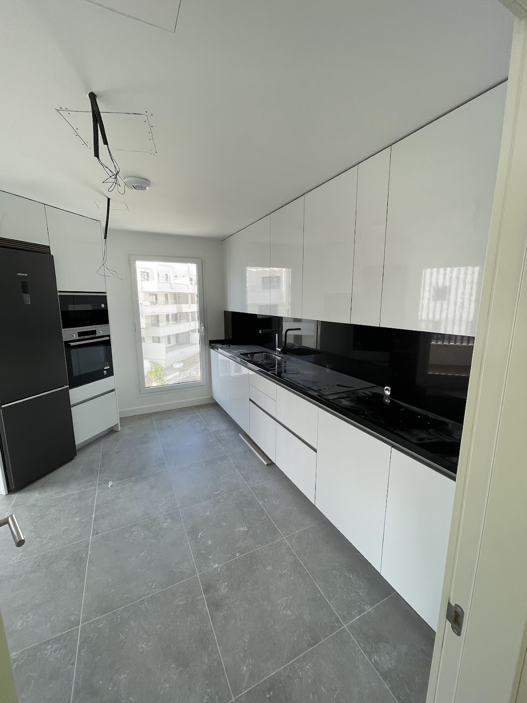

Pintor en Fuengirola: aquí manda el calendario de reservas
En Fuengirola casi todo lo que pinto es apartamento en bloque, y muchos están alquilados por semanas. Eso cambia la forma de trabajar: aquí el problema no suele ser el precio, es el tiempo. Cada día que el piso está de obra es un día que no lo alquilas. Por eso lo primero que te pregunto no es de qué color lo quieres, sino qué días lo tienes libre.
Y luego está lo de siempre en la costa: sol fuerte y aire con sal. En un piso de alquiler el desgaste va más rápido todavía porque entra y sale gente todo el año — roces en los pasillos, marcas de maletas en los rodapiés, esquinas comidas. Ahí no compensa la pintura más barata: se ensucia antes y no se puede lavar. Prefiero ponerte una lavable buena y que aguantes dos temporadas sin retocar.
Trabajo limpio y recojo cada día, porque sé que el piso lo tienes que enseñar o entregar. Y si veo que en los días que me das no cabe hacerlo bien, te lo digo antes de empezar, no a mitad.
Lo que más me piden en Fuengirola
Desde pintar una habitación suelta hasta dejar un apartamento entero listo para la temporada. Esto es lo que sale casi siempre:
Pintura interior
Salones, dormitorios, cocinas y baños. Técnicas básicas y decorativas adaptadas al estilo de cada vivienda.
Pintura decorativa
Efectos especiales, estucos venecianos y acabados de tendencia para elevar el valor del alquiler vacacional.
Pintura exterior
Fachadas, terrazas y patios con pinturas resistentes a la salinidad y al sol intenso de la Costa del Sol.
Tabiques de placas de yeso
Distribución de espacios, aislamiento acústico entre apartamentos y creación de vestidores o despachos.
Falsos techos
Techos de placas de yeso con iluminación LED integrada para renovar completamente el aspecto de salones y cocinas.
Papel pintado
Instalación y retirada de papel pintado en habitaciones y zonas de paso. Gran catálogo de referencias.
Estuco veneciano
Un acabado de los buenos, perfecto para apartamentos de lujo y pisos de alquiler vacacional de nivel.
Impermeabilización
Tratamientos antihumedad en baños, terrazas y zonas expuestas al ambiente marino de Fuengirola.


Mis precios en Fuengirola
Estos son mis precios de partida, los mismos que te diría por teléfono. El presupuesto final depende de cómo estén las paredes, y ese te lo hago gratis después de verlo.
| Servicio | Precio orientativo |
|---|---|
| Pintura interior básica (mano de obra + material) | desde 4 €/m² |
| Pintura decorativa / efectos especiales | desde 10 €/m² |
| Estuco veneciano | desde 18 €/m² |
| Pintura exterior (fachada / terraza) | desde 6 €/m² |
| Tabique simple de placas de yeso | desde 25 €/m² |
| Falso techo básico de placas de yeso | desde 30 €/m² |
| Falso techo con iluminación LED integrada | desde 50 €/m² |
| Papel pintado (colocación incluida) | desde 12 €/m² |
* Precios orientativos para 2026. IVA no incluido. El presupuesto final depende del estado previo de las superficies, accesibilidad y volumen de obra. Consulta sin compromiso.
Solicitar presupuesto detallado
Por dónde me muevo en Fuengirola
Voy a todo Fuengirola y a lo que tiene alrededor. Si la obra dura varios días me quedo por la zona, así que no te cobro desplazamiento:
Cómo trabajamos tú y yo
1. Me escribes
WhatsApp, llamada o email, con fotos si las tienes. Te contesto yo. Si eres extranjero, en inglés sin problema.
2. Voy a verlo y te paso precio
Voy yo, mido y miro cómo está la pared de verdad. En 24 horas tienes el presupuesto por escrito, con materiales, días y precio cerrado. Sin letra pequeña.
3. Cuadramos las fechas con tus reservas
Miramos tu calendario y elegimos el hueco. Mi objetivo es que el piso pare los menos días posibles, no estirar la obra.
4. Hago la obra y recojo cada día
Protejo muebles y suelos antes de tocar nada. Al acabar me llevo los restos y te dejo el piso listo para entrar, no para que limpies tú detrás.
5. Te mando fotos de cómo ha quedado
Fotos de todo, habitación por habitación. Si estás fuera de España es la única forma de que veas de verdad cómo ha quedado antes de pagar el final.
Pintor en Fuengirola: los tres encargos de siempre
Después de tantos años bajando aquí, los trabajos se repiten mucho. Te cuento los tres que más salen, porque seguramente el tuyo es uno de ellos.
El repaso entre temporadas. El piso lleva un año alquilándose y se nota: rodapiés marcados de maletas, manchas de manos junto a los interruptores, esquinas de pasillo comidas y algún golpe en las puertas. No hace falta pintarlo entero cada año, pero sí las zonas de paso, y con pintura lavable de verdad, no con la más barata del almacén. Es el trabajo típico de 3 o 4 días que te cambia las fotos del anuncio.
El piso que compras para alquilar. Aquí sí es de arriba abajo, y casi siempre aparece gotelé debajo de todo. Alisar es lo que más cambia un piso viejo y lo que más se nota en las fotos: plastecer, lijar, imprimar y pintar. Te lo explico entero en quitar gotelé y alisar paredes, con lo que cuesta y lo que tarda.
La humedad del baño y la terraza. En Fuengirola muchos baños no tienen ventana y tiran solo del extractor. Si el extractor va flojo, el techo se llena de puntos negros cada invierno, y por mucho que pintes encima vuelve. Se trata primero y se pinta después con producto antimoho: lo cuento en reparación de humedades. Y en terrazas y fachadas expuestas al sol y a la sal trabajo desde 6 €/m² con producto de exterior, no con pintura de interior estirada — más detalle en pintura de fachadas y exteriores.
Si lo tuyo es un piso que se alquila por semanas, te interesa cómo organizo yo estas obras sin que pierdas reservas: lo tengo escrito en pintar un piso de alquiler vacacional en la costa.
Tabiques y falsos techos en Fuengirola: sacar partido a los metros
En un apartamento de alquiler, una habitación más es más gente y más precio por noche. Por eso el encargo estrella en placas de yeso laminado aquí es partir un salón largo y sacar un dormitorio: tabique simple desde 25 €/m², o doble desde 35 €/m² si quieres además que no se oiga de una habitación a otra. Se hace en seco, en dos o tres días, y sin la escombrera que deja el ladrillo.
Lo segundo es el techo. Bajarlo para esconder los conductos del aire acondicionado sale desde 30 €/m², y los falsos techos de placas de yeso con LED desde 50 €/m² con la luz ya puesta. En un salón que se fotografía para un anuncio, es la reforma que más se nota por lo que cuesta.
Y una cosa honesta: en baños y cocinas hay que poner placa hidrófuga, no la normal. Si te dan un precio muy por debajo, pregunta qué placa lleva antes de firmar.
Cerca de Fuengirola también trabajo aquí
Me muevo por toda la Costa del Sol occidental. Si tienes otra propiedad por la zona, mira pintor y placas de yeso en Benalmádena, Torremolinos o Marbella. Con varios pisos a la vez los organizo seguidos y te sale mejor de precio, porque me ahorro viajes.
Lo que no hago, para no marearte
No hago fontanería ni electricidad de obra nueva, no toco estructura y no trabajo en fachada con andamio colgante en edificios de muchas plantas. Tampoco pinto encima de una humedad sin tratarla, aunque me lo pidas para salir del paso antes de una reserva: eso vuelve a salir y el que queda mal soy yo.
Lo que dicen de mí en Google
Estas dos las han escrito clientes míos en Google, con su nombre. No les he cambiado ni una coma. Las demás las tienes en mi ficha, que es donde de verdad se ve si un pintor cumple o no. — Asis
"Actually this worker got me a nice job, clear and beautiful — I mean professional. He can be relied on."
"Contento con la reforma que Asis me ha hecho en mi casa, un profesional de los que ya no quedan y con precios competentes!!"
Lo que más me preguntan en Fuengirola
¿Puedes pintar mi apartamento de Fuengirola entre dos reservas?
Vivo fuera de España, ¿cómo controlo la obra a distancia?
¿Cuánto cuesta pintar un apartamento de dos dormitorios en Fuengirola?
Mi piso está en un bloque, ¿hay líos con la comunidad?
¿Merece la pena poner tabiques nuevos en un piso de alquiler vacacional?
Escríbeme y te paso presupuesto
Estamos disponibles de lunes a sábado de 8:00 a 20:00h. English spoken — We attend foreign property owners in English.